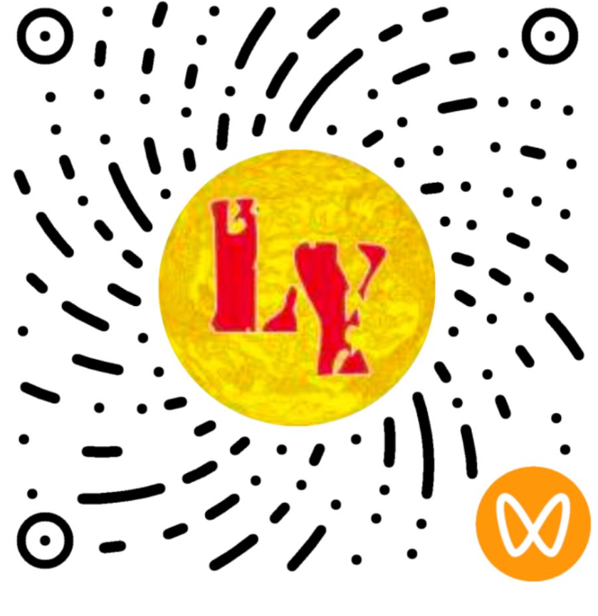
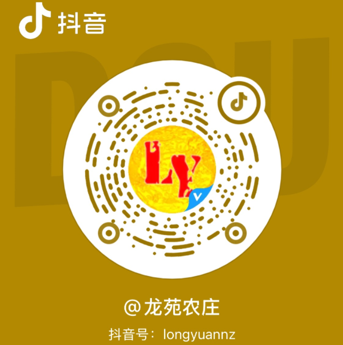
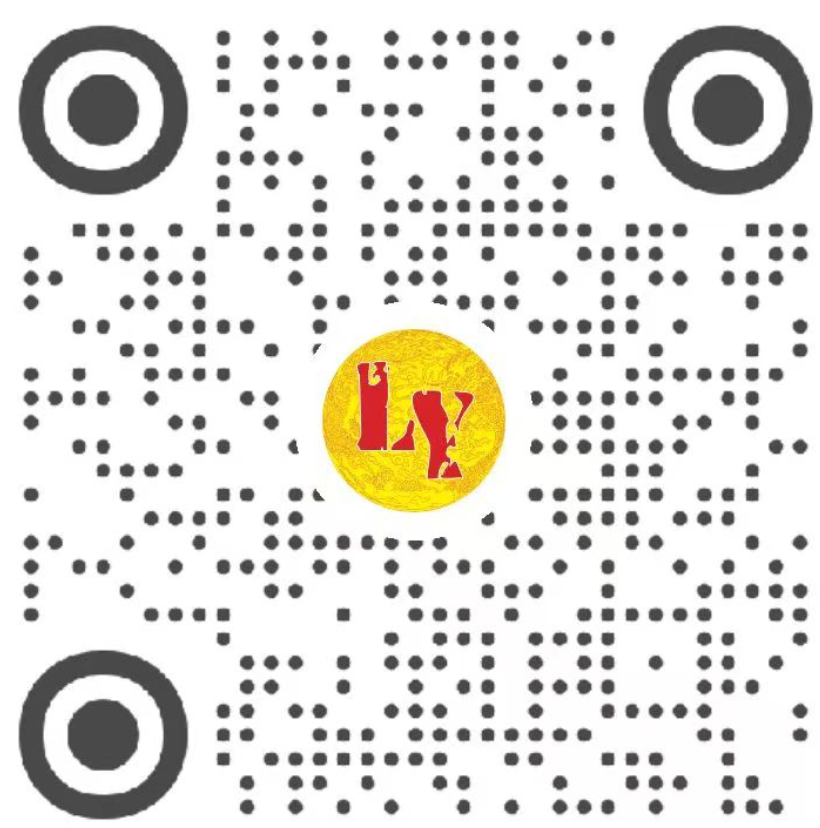

品味乡村气息，来自龙苑农庄
龙苑农庄期待您的光临
134 3511 8194
150 4541 893
广东省韶关市始兴县隘子镇茶头排三岔路口（九龄牌坊地标）往司前方向50米左右
餐饮：每日 10:00–21:00
民宿：24小时入住
120KW快充：农庄门口停车场（2把枪）
7KW慢充：民宿门口停车场（2把枪）
我们悉心听取您对农庄和民宿的每一条反馈意见，不断提升综合服务水平。
🎯 您可以告诉我们：菜品/住宿体验、设施建议、服务细节、希望增加的体验等。您的每一条留言，我们都会认真阅读。
我们会认真阅读每一条意见，不断提升农庄和民宿的综合水平，服务好一直支持我们的用户。
紧急事宜请直接致电 134 3511 8194
在主流生活服务平台都能搜索到「龙苑农庄」，扫码下载 App 或点击图标即可直达。
店长微信预订咨询 · 直接沟通
微信搜索「龙苑农庄」菜品 · 优惠 · 节庆资讯

「始兴龙苑农庄」看 · 农庄日常 · 客家美食

@龙苑农庄抖音号：longyuannz

龙苑农庄 · 客家山野美食分享客家味道与山居日常
无论是一桌地道客家美食，还是一次悠然山居体验，龙苑农庄都期待您的光临